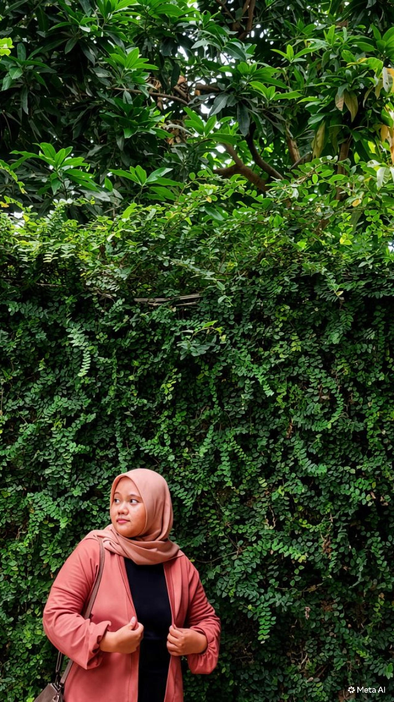

Web Development
Membangun dan mengelola website responsif dengan kode yang bersih.
01Halo, saya
Saya senang membangun solusi digital, mengembangkan teknologi, dan mengubah ide menjadi karya yang bermanfaat.

01 / TENTANG SAYA
Saya adalah pribadi yang memiliki ketertarikan pada teknologi informasi, pengembangan sistem, dan pemecahan masalah.
Melalui pengalaman dan proses belajar yang berkelanjutan, saya berusaha menciptakan pekerjaan yang rapi, efektif, dan memberikan dampak positif. Bagian ini dapat Anda sesuaikan dengan cerita, latar belakang pendidikan, dan pengalaman pribadi.
02 / KEAHLIAN
Kombinasi keahlian teknis dan kreatif untuk menghasilkan karya digital yang berkualitas.
Membangun dan mengelola website responsif dengan kode yang bersih.
01Perancangan desain antarmuka, wireframing, prototipe, serta aset visual.
02Produksi dan editing konten video kreatif dengan visualisasi yang menarik.
03Pembuatan transisi dinamis, efek gerak, dan animasi interaktif.
04Pemeliharaan perangkat keras/lunak, troubleshooting, dan dukungan teknis.
05Menganalisis kendala secara mendalam untuk menyusun solusi efektif.
0603 / PORTOFOLIO
Beberapa contoh proyek yang dapat Anda ganti dengan hasil pekerjaan sendiri.
WEB DEVELOPMENT
Website profil profesional yang informatif dan responsif.
UI/UX DESIGN
Desain antarmuka interaktif dan game edukasi tebak kata bahasa Inggris yang menyenangkan untuk anak-anak.
CREATIVE & MOTION
Pembuatan animasi interaktif, motion graphics, dan efek visual dinamis untuk pengalaman visual yang menarik.
04 / KONTAK
Saya terbuka untuk berdiskusi, berbagi ide, dan menjalin kolaborasi.